Circuito · Roteiro sazonal

Circuito de Inverno Bom Gourmet
Fondues, sopas e pratos acolhedores: o roteiro que celebra os sabores do frio nos restaurantes de Curitiba — e aquece a economia gastronômica na estação mais desafiadora.
📅Junho e julho
❄️Sazonal de inverno
📍Curitiba
🍲Fondues, sopas e pratos acolhedores
O Circuito em números
Calor para a economia no inverno
0Restaurantes no roteiro
0Pratos especiais
0De circuito
0Curitiba
O que é
Um roteiro feito para o frio
Durante junho e julho, restaurantes de Curitiba criam pratos especiais de inverno — fondues, sopas, caldos e receitas acolhedoras. O público monta seu roteiro, descobre lugares novos e os restaurantes ganham fluxo na temporada mais fria.
Para as marcas, é presença em uma experiência sazonal que o público acompanha de ponta a ponta.
Aftermovie
Reviva a última temporada
Em movimento
O Circuito em fotos
Cotas de patrocínio
Sua marca no roteiro do inverno
Patrocínio
Sob consulta
- Tudo do plano Apoio
- Ativação nos restaurantes
- Conteúdo dedicado e mídia
- Relatório de resultados
Master
Sob consulta
- Tudo do plano Patrocínio
- Naming e exclusividade
- Protagonismo na comunicação
Vamos aquecer o inverno juntos
Leve sua marca para o Circuito de Inverno
Fale com nosso time e descubra a melhor forma de participar.